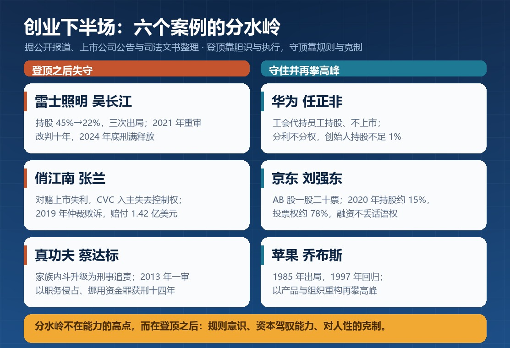

创业是一项稳定持续的能力。能把一家企业第一次打到顶峰的人，未必能第二次把自己送回更高的位置。雷士照明创始人吴长江的经历把这个问题摆得很直白：前半程靠胆识、机遇和执行力把企业做起来，后半程能不能守住、能不能再攀高峰，靠的却是规则意识、资本驾驭能力和对人性的克制。这不是一个人的故事，而是一代创业者共同面对的分水岭。
以下梳理依据公开报道、上市公司公告与司法文书整理，重点不在评判个人，而在拆解两种能力究竟差在哪里。

一、事实层面：三次登顶，三次出局
1998 年底，吴长江与两位合伙人在惠州创办雷士照明，注册资金 100 万元，他出资 45 万元，另外两人各出 27.5 万元。照明行业工程单依赖本地关系和垫资，全国铺直营既不现实也不经济。雷士的办法是在每个省找一家大经销商做运营中心，区域独家、公司给保护价、经销商自己垫资铺分销。这套渠道制度让雷士铺得比同行快，到 2010 年，36 个运营中心覆盖全国，雷士成为国内照明行业出货量最大的品牌之一。
第一次出局发生在 2005 年。三位股东在分红与再投入上分歧，吴长江一度拿 8000 万元退出；全国经销商反弹，最终两位合伙人各拿 8000 万元退出，公司付出 1.6 亿元把股权买回。他赢了，但公司现金流被抽干。也正是在这一年之后，他把公司的命押在了渠道上。
第二次转变从融资开始。2006 年，软银赛富投入 2200 万美元取得约 35.71% 股份，协议约定若未在 2011 年 8 月 1 日前上市，赛富有权要求回购。2008 年高盛入股，赛富持股升至 36.05%，超过创始人的 34.4%，投资人成为第一大股东。2010 年 5 月，雷士照明在香港联交所上市，吴长江以 29 亿元身家进入福布斯中国富豪榜。上市解除了对赌，却没有改变股权结构。2011 年施耐德电气入股成为第三大股东，董事会九个席位中管理层只占两席。
2012 年 5 月，吴长江辞去公司职务；7 月，惠州、重庆、万州三地工厂停工，36 个运营中心停止下单，经销商要求创始人回归、施耐德出局。9 月他回任临时运营委员会负责人，但董事长仍是赛富方面的阎焱。12 月，他引入德豪润达创始人王冬雷作为新盟友，德豪润达成为第一大股东，2013 年 1 月吴长江重新出任 CEO。
第三次出局在 2014 年 8 月 8 日。董事会罢免其 CEO 职务，双方围绕重庆总部的印章和证照发生公开冲突，雷士的光源采购向德豪润达集中这一安排，成为后续互相指控的焦点。据公开的司法文书，2012 年至 2014 年间，吴长江被认定未经决议将公司流动资金存款转为保证金，为其实际控制的公司提供贷款担保，涉案金额 9 亿余元。2016 年一审获刑十四年，2018 年广东高院撤销原判发回重审，2021 年重审改判十年，同年二审维持；2024 年 12 月刑满释放。2019 年，KKR 以约 55.59 亿元收购雷士中国 70% 股权。
二、同类案例：分水岭都出现在登顶之后
雷士并非孤例。国美电器的黄光裕在 2008 年 11 月被警方带走后，职业经理人陈晓主导去黄化，并在 2009 年引入贝恩资本 18.04 亿港元可转债。2010 年 9 月 28 日的临时股东大会上，黄光裕提出的罢免陈晓等议案未获通过，仅撤销增发授权一项通过；2011 年 3 月陈晓辞任。值得注意的是，当年董事会能够不经股东大会重新任命贝恩三名董事，依据的是黄光裕在绝对控股时亲手授予董事会的一般授权——规则是他定的，后来被反过来用在自己身上。
俏江南的张兰在 2008 年引入鼎晖创投约 2 亿元、占股 10.526%，条款中约定若 2012 年底未能上市，投资方有权要求回购。上市未果，回购义务无法履行，2014 年 CVC 以约 3 亿美元收购俏江南 82.7% 股权，张兰持股降至 13.8%，其后进一步失去董事会席位；2019 年仲裁败诉，被判支付 1.42 亿美元及利息。对赌条款把上市从目标变成了债务。
真功夫则展示了另一种失守。蔡达标与潘宇海的家族合作在上市筹备期演变为控制权争夺，2011 年蔡达标因职务犯罪被捕；2013 年广州天河区法院一审认定职务侵占 1500 余万元、挪用资金 1800 余万元，判处有期徒刑十四年，2014 年二审维持。家族信任没有转化为公司治理，最后以刑事追责收场。
对照面同样清晰。华为的任正非在持股不足 1% 的情况下，通过工会代持员工持股与不上市的制度安排，把外部控制权争夺的入口关在门外；京东的刘强东用一股二十票的 AB 股结构，在 2020 年赴港二次上市时以约 15% 的持股保持约 78% 的投票权，融资与控制权得以分开安排；苹果的乔布斯 1985 年出局、1997 年回归，此后以产品线收拢和组织重构，把公司带上新的高度。三次案例说明：守住巅峰靠制度设计，再攀高峰靠组织能力。
三、分析：三种能力的缺席，如何一步步变成结局
第一是规则意识。前半程是增量市场，胆识、机遇和执行力是主要变量；登顶之后进入分配与治理，董事会、股东会、公司章程和投资条款才是真实战场。吴长江从 45% 起步，到 2008 年 34.4%、2012 年 22.07%，每一次稀释都换来了短期资金，却没有同步锁定席位与否决权。他在两次危机中靠经销商停货迫使董事会让步，但停货这件武器谁掌握货谁就能用；到 2014 年，董事长自己就能停货，渠道只能选一边。黄光裕的案例更说明，规则不是写给别人看的，你顺风时授权出去的权力，逆风时会原样生效。
第二是资本驾驭能力。资本既不是敌人也不是救兵，而是一组有价格的条款。对赌、回购、优先清算、董事席位，都应在签字之前算清最坏情形。赛富的对赌把上市变成硬期限；张兰的回购义务最终把控制权交了出去；吴长江引入德豪润达本为制衡赛富，结果第一大股东换人、核心部件采购向盟友集中，两年后成为互相指控的把柄。京东用 AB 股把融资与控制权分开定价，华为以不上市避开公开市场的争夺入口，方向不同，共同点是先设计规则再拿钱。
第三是对人性的克制。合伙时的人情不能替代退出机制，家族信任不能替代财务内控。张兰设立的海外家族信托后来被新加坡法院认定未发挥风险隔离功能，原因之一是她仍可自由支配相关账户资金——名义上的隔离挡不住实质控制。真功夫从家族内斗走到刑事追责，雷士从兄弟分权走到公司资产与个人行为边界模糊，路径不同，逻辑相通：当公司账户、个人信用和关系网混在一起，任何一处的裂缝都会变成对手的抓手。克制不是不争，而是把争的边界提前写进制度。
四、趋势判断：创业能力正在被重新定义
其一，制度工具更多，但边界也更清楚。2024 年 7 月 1 日施行的新公司法把类别股写入法律，同时明确公开发行股份的公司不得发行此类股份，公开发行前已发行的除外；科创板对特别表决权设了每股不超过普通股十倍、普通股表决权比例不低于 10%、只能在上市前设置等约束，重大事项仍须同股同权。工具箱在扩大，靠信息差设计条款的空间在收窄。
其二，透明度和合规要求抬高了下限。关联交易、资金往来、个人信用正在被更完整地记录和披露。过去可以靠关系斡旋解决的问题，现在会被放到董事会决议、公告和法庭上重新检验。对创业者而言，干净的资金边界不再只是道德要求，而是保护自身话语权的前提。
其三，创业教育需要补上后半场。多数课程讲的是如何起步、如何找钱、如何做产品，较少讲如何设计股权结构、如何读懂条款、如何开好一次董事会、如何处理家族与职业角色。对粤港澳大湾区而言，产教融合不只是把学生送进企业，也应当把真实商业案例中的治理教训带进课堂，让未来的创业者知道：写协议不是不信任，而是对长期合作最起码的尊重。
其四，再攀高峰靠组织，不靠个人意志。乔布斯回归苹果之后真正起作用的，不只是个人光环，还有产品线的大幅收拢与供应链、组织的重构。雷士的 36 个运营中心曾经是它登顶的引擎，后来却成了谁都能拿去用的筹码。一套只能靠某个人维持的优势，本质上不是组织能力。把渠道能力、客户关系和产品标准沉淀进制度，企业才可能在创始人退场后继续增长。
结语
创业确实是一项稳定持续的能力。打到顶峰，证明的是胆识、机遇与执行力；守住巅峰并再攀高峰，检验的是规则意识、资本驾驭能力和对人性的克制。前一种能力让人站上去，后一种能力决定能站多久、能不能再上去一次。对今天的创业者来说，与其在危机来临时调动渠道和人脉，不如在顺风时把协议、席位和边界写清楚——那才是更难复制的第二增长曲线。